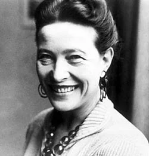
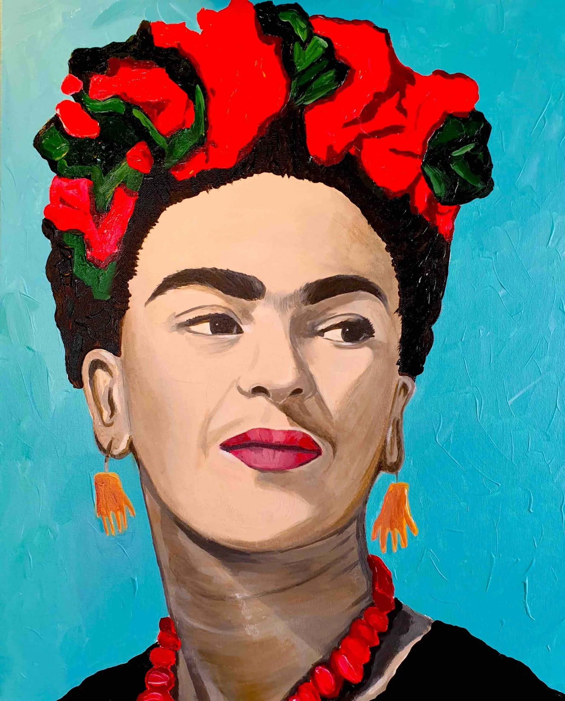
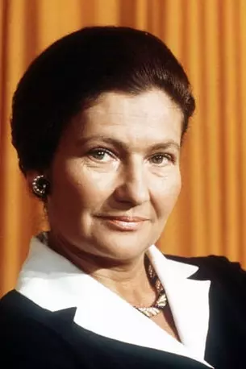
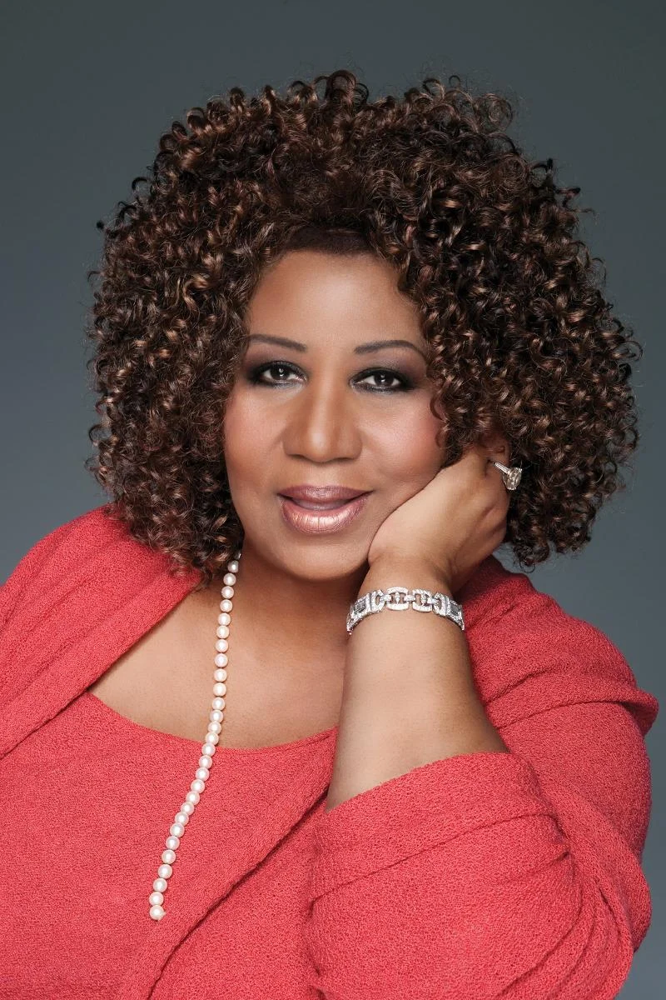

Feminists icon’s gallery
Simone de Beauvoir
Simone de Beauvoir
(1908-1986)
Writer, essayist, philosopher, novelist: this versatile woman is an icon of the 20th century. She is known for her extensive bibliography, but also for her convictions about women’s rights. Born on January 9, 1908 in Paris, she published her first books during the Second World War. But her career really took off when she published The Second Sex in 1949. The essay was an immediate success, scandalous in several institutions such as the Vatican to the point of putting it on the sidelines. For more informations about The Second Sex, see the article "The Second Sex, a timeless piece". In 1954, she was awarded the Goncourt Prize after the publication of her novel The Mandarins, becoming one of the most widely read authors in the world. She died on 14 April 1986 at the age of 78, leaving behind a total of 24 books. Added to this are posthumous works written by his heir Sylvie Le Bon de Beauvoir. The most recent one dates from 2020 (The Inseparables).
Frida Kahlo
 Self-portrait of Frida Kahlo (1948)Mexican artist Frida Kahlo was born on July 6, 1907 in Mexico City. She has produced more than 140 paintings in her life, and has become a symbol of Mexico abroad in her lifetime. Since her childhood, she has been protesting against gender inequalities, not only in Mexican society but also in the countries she visits to present her exhibitions (the United States, France...). She was also an advocate for women’s emancipation and was keen to challenge the stereotypes of the time. She is the example of the strong, independent woman who fights against the obstacles of life (and society).
Simone Veil
Simone Veil
(1927-2017)
Simone Veil (born Simone Jacob on July 13, 1927) is a French magistrate and stateswoman. An ardent defender of women’s rights, she is known for the “Veil Law” and the speech that preceded the passing of the law. The “Veil Law” allows women to have access to abortion legally. Simone Veil has held many high-level positions. For example, she was appointed minister of several institutions under different governments and is also a symbol of the fight against anti-Semitism. She died on June 30, 2017 in Paris, and was buried in the Pantheon in 2018 on Emmanuel Macron’s demand.
Aretha Franklin
Aretha Franklin
(1942-2018)
Aretha Franklin (born March 25, 1942 in Memphis, Tennessee, USA) is a songwriter and self-songwriter nicknamed “The Queen of Soul. ” She is considered by many to be the most influential African-American singer of the 20th century. Having recorded a total of 42 albums in her career, she has inspired many artists, both from her time and contemporary ones. She is also the most ranked singer in American chart history. Most of its most famous titles are designations to respect for women and their rights. She even parodies an Otis Redding single Respect, to give it a new meaning. Instead of degrading women, the song claims the right of women to be valued as much as men. Several other titles support this idea (Think for example, remastered and featured in the film The Blues Brothers later). His death on 13 August 2018 triggered a shower of tributes to him from people of all walks of life.
Malala Yousafzai
Malala Yousafzai
(1997-.)
Malala Yousafzai (born 12 July 1997) is a Pakistani women’s rights activist. She became known in 2009, when she was only 11 years old. Following the publication of a blog for the BBC called Diary of a Pakistani Schoolgirl. She describes her perspective on education and her life under Taliban rule. It also opposes the ruling power that was trying to suppress schools in Pakistan. In 2014, at the age of 17, she won the Nobel Peace Prize with Indian Kailash Satyarthi, becoming the youngest Nobel Prize winner in history.
Mark Ruffalo
Mark Ruffalo
(1967-.)
An American actor known for playing the Hulk on the big screen, Mark Ruffalo is one of Hollywood’s most committed actors. He is also involved in environmental protection alongside Leonardo DiCaprio and is mobilizing to defend women’s rights. In 2013, he signed an open letter defending the right to abortion:
I’m a man, I could say it’s absolutely none of my business. Except I have two daughters and my mother was forced to have an illegal abortion in a state where abortion was forbidden when she was young. It cost him $600.
On January 21, 2017, Mark Ruffalo was at the “Women’s March” in Washington, a political demonstration organised following the election of Donald Trump on November 8, 2016. One of its aims was to promote gender equality.